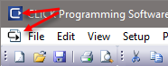

Topic: CL009

| CLICK Icon Menus |
Topic: CL009
|
There
are two CLICK Icons
available on the CLICK Programming
Software in the Classic UI. The first Icon  is displayed on the
left side of the Title Bar
as shown below. The second Icon
is displayed on the
left side of the Title Bar
as shown below. The second Icon  is displayed on the left
side of the Main Menu
as shown below. The Ribbon UI only contains the first icon.
is displayed on the left
side of the Main Menu
as shown below. The Ribbon UI only contains the first icon.

When you click on either one of these Icons , a drop down menu is displayed as shown below. Both drop down menus provide the same function selections but the Main Menu Icon provides an additional selection called Next.
For more information, click on any of the selections on the figures shown below.

The
Restore selection
and the Restore Down Icon  (located on top right corner
of the window), are used to control the size of the window.
These commands work together with the Maximize command. When a
Restore is made, the
window will downsize itself to its previous smaller size.
When the window reduces in size, the Restore
selection becomes gray indicating the selection is not available
and the Restore Down Icon
(located on top right corner
of the window), are used to control the size of the window.
These commands work together with the Maximize command. When a
Restore is made, the
window will downsize itself to its previous smaller size.
When the window reduces in size, the Restore
selection becomes gray indicating the selection is not available
and the Restore Down Icon  changes to the Maximize
icon
changes to the Maximize
icon .
The Restore Icon
.
The Restore Icon  may also be beige
in color.
may also be beige
in color.
The Move command only works if the window is not in the Maximized state. This command used to Move the application window by using the keyboard arrow keys or the mouse. The Move command is located in the drop down menus as shown above. To end the Move command, tap the Escape (Esc) key on your keyboard. After moving the application window, pressing the Enter key will leave the window in the new location, pressing the Escape key will return window back to the original location.
The Size command only works if the window is not in the Maximized state. This command is used to Size the application window by using the keyboard arrow keys or the mouse. When the Size command is selected, followed by tapping the Left or Right arrow keys on the keyboard, the width of the active window may be increased or decreased. When the Size command is selected, followed by tapping the Up or Down arrow keys on the keyboard, the height of the active window may be Increased or Decreased. To end the Size command, press the Escape (Esc) key on your keyboard.
The
Minimize Icon and Menu
Selection are used to Minimize
or reduce the size of a window so only the title bar is visible
at the bottom of your screen. This allows the user to
remove the window from the screen without closing it. When
ready to reopen the window, click on the Maximize
Icon and the window will open to the Maximum
size. You may also click on the Restore
Icon to open the window to the previous size before
it was minimized. The Minimize
Icon
and Menu
Selection are used to Minimize
or reduce the size of a window so only the title bar is visible
at the bottom of your screen. This allows the user to
remove the window from the screen without closing it. When
ready to reopen the window, click on the Maximize
Icon and the window will open to the Maximum
size. You may also click on the Restore
Icon to open the window to the previous size before
it was minimized. The Minimize
Icon  may
also be beige in color.
may
also be beige in color.
The
Maximize selection
and the Maximize Icon  (located on top
right corner of the window), are used to control the size
of the window. These commands work together with the
Restore command. When
a Maximize is made,
the window will open to a full screen size. When the
window is full size, the Maximize
selection becomes gray indicating the selection is not available
and the Maximize Icon
(located on top
right corner of the window), are used to control the size
of the window. These commands work together with the
Restore command. When
a Maximize is made,
the window will open to a full screen size. When the
window is full size, the Maximize
selection becomes gray indicating the selection is not available
and the Maximize Icon changes to the
Restore Down Icon
changes to the
Restore Down Icon  .
.
The Next command allows the user to toggle between opened programs. However, the Next command only works with active programs, meaning that if you have three projects opened, only those three programs will toggle.